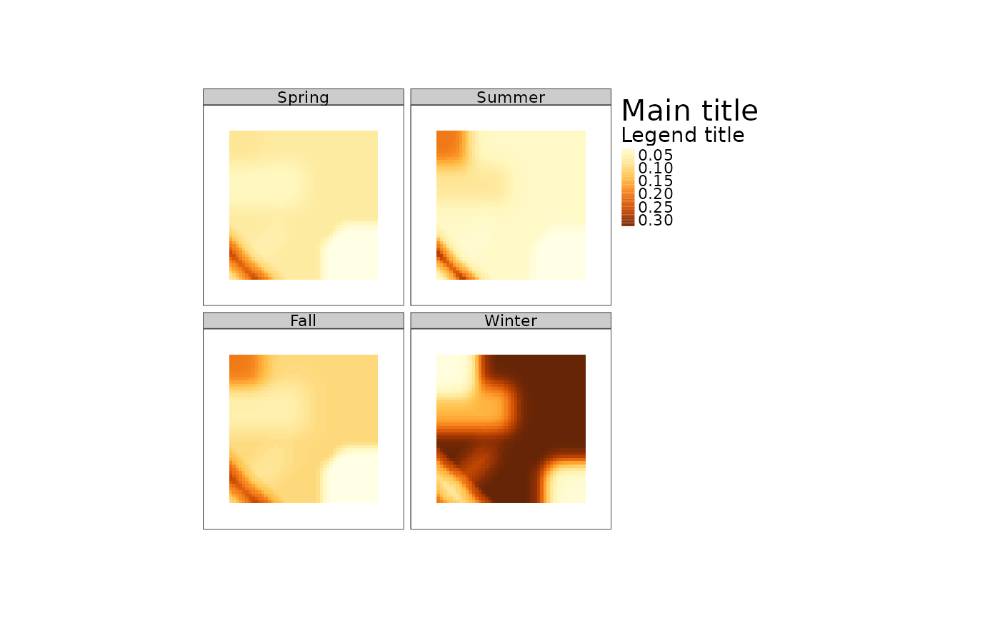

plot-CaribouHabitat-ANY-method.RdThis will plot the predicted habitat use from a CaribouHabitat object.
# S4 method for CaribouHabitat,ANY
plot(
x,
season = "all",
raster.title = "Probability\nof use",
tmap = requireNamespace("tmap", quietly = TRUE),
...
)A CaribouHabitat object
character. By default "all" or supply a vector of seasons ie
c("Spring", "Summer", "Fall", "Winter")
character. Title to give map
logical. Should tmap be used for plotting by default it is used if installed
Other agruments passed to tmap::qtm or raster::plot
If tmap is TRUE a tmap object if FALSE a plot is created in the viewer
# create example rasters
lc <- raster::raster(xmn = 0, xmx = 25000, ymn = 0, ymx = 25000,
resolution = 250, crs = 5070)
lc[] <- 0
nd <- lc
nd[1:30, 1:30] <- 1
ad <- lc
ad[30:50, 3:50] <- 1
lc[] <- 1
lc[70:100, 70:100] <- 2
# create sf objects
lf <- sf::st_as_sf(sf::st_sfc(list(sf::st_linestring(matrix(c(0, 0, 10000, 10000),
ncol = 2, byrow = TRUE))),
crs = 5070))
esk <- sf::st_as_sf(sf::st_sfc(list(sf::st_linestring(matrix(c(0, 10000, 10000, 0),
ncol = 2, byrow = TRUE))),
crs = 5070))
projPol <- sf::st_sf(sf::st_as_sfc(sf::st_bbox(ad)))
# calculate relative probability of use
res <- caribouHabitat(landCover = lc,
linFeat = lf,
esker = esk,
natDist = nd,
anthroDist = ad,
projectPoly = projPol,
caribouRange = "Nipigon",
winArea = 1000 #leave as default NULL except for small examples
)
#> old-style crs object detected; please recreate object with a recent sf::st_crs()
#> old-style crs object detected; please recreate object with a recent sf::st_crs()
#> Applying moving window.
# plot the relative probability of use for each season
plot(res)
# plot for one season
plot(res, season = "Winter")
if(requireNamespace("tmap", quietly = TRUE)){
# pass arguments on to tmap::qtm
plot(res, raster.style = "cont", title = "Main title",
raster.title = "Legend title")
}

# force plot with base graphics arguments passed to raster::plot()
plot(res, tmap = FALSE, main = c("title1", "title2"))